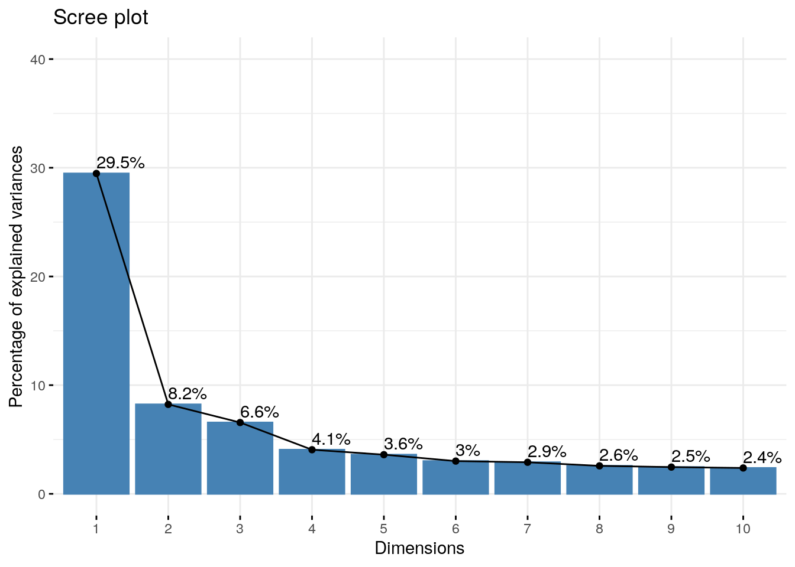
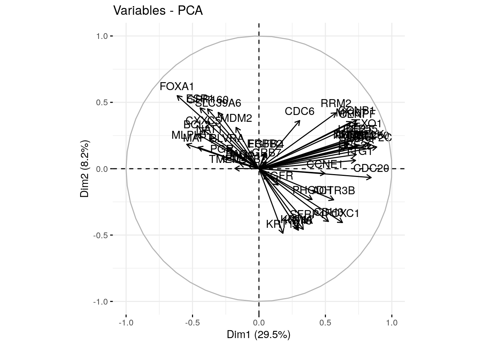
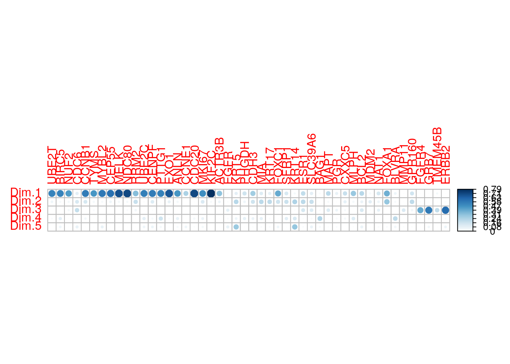
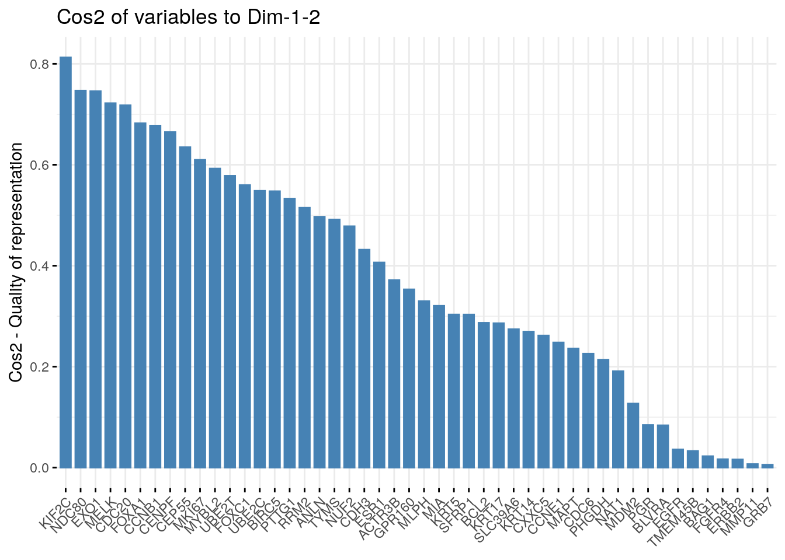
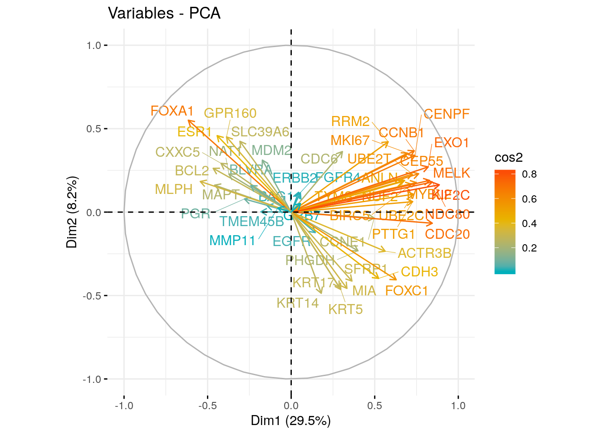

Chapter 12 PCA
12.1 About Principal Component Analysis (PCA
The central idea of principal component analysis (PCA) is to reduce the dimensionality of a data set consisting of a large number of interrelated variables, while retaining as much as possible of the variation present in the data set. This is achieved by transforming to a new set of variables, the principal components (PCs), which are uncorrelated ordered so that the first few retain most of the variation present in all of the original variables.
To begin with PCA analysis our data must be in 2 dimensional form (data frame or matrix) where individuals or observations are represented in rows while variables or features are represented in columns. It is important to note that for PCA to work well, there must be some degree of correlation among variables. In that case PCA will try to detect such correlated variables and reduce the dimension by giving you new set of variables that are not correlated to each other. These new variables correspond to a linear combination of the originals. In simple term, PCA reduces the dimesnion by identifying correlated variables and giving you a new set of uncorrelated variables (Princical components).
PCA method is particularly useful when the variables within the data set are highly correlated
Lets begin with analysis by taking gene expression dataset from TCGA dataset for breast cancer.
12.2 Data preparation
12.2.1 Load Gene expression data from TCGA Breast cancer
## [1] 413 49## Sample UBE2T BIRC5 NUF2 CDC6
## 1 TCGA-5T-A9QA-01 1.9323 0.2744 1.7735 1.3728
## 2 TCGA-A1-A0SE-01 0.7931 -0.1335 -0.0023 -0.1102
## 3 TCGA-A1-A0SH-01 -0.6785 -0.4435 -0.9456 -0.7541## [1] 413 48## UBE2T BIRC5 NUF2 CDC6 CCNB1
## TCGA-5T-A9QA-01 1.9323 0.2744 1.7735 1.3728 0.1060
## TCGA-A1-A0SE-01 0.7931 -0.1335 -0.0023 -0.1102 0.1857
## TCGA-A1-A0SH-01 -0.6785 -0.4435 -0.9456 -0.7541 -0.819712.2.2 Data standardization
In principal component analysis, variables are often scaled (i.e. standardized). This is particularly recommended when variables are measured in different scales (e.g: kilograms, kilometers, centimeters, …); otherwise, the PCA outputs obtained will be severely affected.
The goal is to make the variables comparable. Generally variables are scaled to have i) standard deviation one and ii) mean zero.
The standardization of data is an approach widely used in the context of gene expression data analysis before PCA and clustering analysis. We might also want to scale the data when the mean and/or the standard deviation of variables are largely different.
When scaling variables, the data can be transformed as follow:
xi−mean(x)/sd(x)
Where mean(x) is the mean of x values, and sd(x) is the standard deviation (SD).
The R base function scale() can be used to standardize the data. It takes a numeric matrix as an input and performs the scaling on the columns.
Note that, by default, the function PCA() [in FactoMineR], standardizes the data automatically during the PCA; so you don’t need do this transformation before the PCA.
12.3 Perform PCA
## **Results for the Principal Component Analysis (PCA)**
## The analysis was performed on 413 individuals, described by 48 variables
## *The results are available in the following objects:
##
## name description
## 1 "$eig" "eigenvalues"
## 2 "$var" "results for the variables"
## 3 "$var$coord" "coord. for the variables"
## 4 "$var$cor" "correlations variables - dimensions"
## 5 "$var$cos2" "cos2 for the variables"
## 6 "$var$contrib" "contributions of the variables"
## 7 "$ind" "results for the individuals"
## 8 "$ind$coord" "coord. for the individuals"
## 9 "$ind$cos2" "cos2 for the individuals"
## 10 "$ind$contrib" "contributions of the individuals"
## 11 "$call" "summary statistics"
## 12 "$call$centre" "mean of the variables"
## 13 "$call$ecart.type" "standard error of the variables"
## 14 "$call$row.w" "weights for the individuals"
## 15 "$call$col.w" "weights for the variables"12.4 Visualization and Interpretation
We’ll use the factoextra R package to help in the interpretation of PCA. No matter what function you decide to use [stats::prcomp(), FactoMiner::PCA(), ade4::dudi.pca(), ExPosition::epPCA()], you can easily extract and visualize the results of PCA using R functions provided in the factoextra R package.
These functions include:
- get_eigenvalue(res.pca): Extract the eigenvalues/variances of principal components
- fviz_eig(res.pca): Visualize the eigenvalues
- get_pca_ind(res.pca), get_pca_var(res.pca): Extract the results for individuals and variables, respectively.
- fviz_pca_ind(res.pca), fviz_pca_var(res.pca): Visualize the results individuals and variables, respectively.
- fviz_pca_biplot(res.pca): Make a biplot of individuals and variables.
12.5 Eigenvalues / Variances / Number of PCs to consider
## eigenvalue variance.percent cumulative.variance.percent
## Dim.1 14.14791842 29.4748300 29.47483
## Dim.2 3.94971231 8.2285673 37.70340
## Dim.3 3.14962824 6.5617255 44.26512
## Dim.4 1.94797974 4.0582911 48.32341
## Dim.5 1.72929760 3.6027033 51.92612
## Dim.6 1.44630087 3.0131268 54.93924
## Dim.7 1.39375810 2.9036627 57.84291
## Dim.8 1.23543483 2.5738226 60.41673
## Dim.9 1.18112455 2.4606761 62.87741
## Dim.10 1.14208359 2.3793408 65.25675
## Dim.11 1.04262060 2.1721263 67.42887
## Dim.12 0.96778667 2.0162222 69.44509
## Dim.13 0.89097953 1.8562074 71.30130
## Dim.14 0.84246903 1.7551438 73.05645
## Dim.15 0.82614443 1.7211342 74.77758
## Dim.16 0.77973076 1.6244391 76.40202
## Dim.17 0.74045143 1.5426071 77.94463
## Dim.18 0.69874753 1.4557240 79.40035
## Dim.19 0.64832720 1.3506817 80.75103
## Dim.20 0.62876820 1.3099337 82.06097
## Dim.21 0.59805408 1.2459460 83.30691
## Dim.22 0.56207691 1.1709936 84.47791
## Dim.23 0.55446717 1.1551399 85.63305
## Dim.24 0.54943762 1.1446617 86.77771
## Dim.25 0.50047278 1.0426516 87.82036
## Dim.26 0.46999305 0.9791522 88.79951
## Dim.27 0.44726751 0.9318073 89.73132
## Dim.28 0.44451805 0.9260793 90.65740
## Dim.29 0.41449796 0.8635374 91.52093
## Dim.30 0.38835714 0.8090774 92.33001
## Dim.31 0.37813713 0.7877857 93.11780
## Dim.32 0.34982619 0.7288046 93.84660
## Dim.33 0.33271124 0.6931484 94.53975
## Dim.34 0.30820183 0.6420872 95.18184
## Dim.35 0.28832408 0.6006752 95.78251
## Dim.36 0.26472387 0.5515081 96.33402
## Dim.37 0.23075267 0.4807347 96.81476
## Dim.38 0.22028177 0.4589204 97.27368
## Dim.39 0.20299552 0.4229073 97.69658
## Dim.40 0.18797839 0.3916216 98.08821
## Dim.41 0.16527540 0.3443237 98.43253
## Dim.42 0.14317163 0.2982742 98.73080
## Dim.43 0.14014861 0.2919763 99.02278
## Dim.44 0.11948342 0.2489238 99.27170
## Dim.45 0.11157799 0.2324541 99.50416
## Dim.46 0.09824474 0.2046765 99.70883
## Dim.47 0.08201146 0.1708572 99.87969
## Dim.48 0.05774817 0.1203087 100.00000PC1 explains 29.47% variation in the data while PC2 explains 8.22% variation. Together they explain 37.70% of variation
Eigenvalues can be used to determine the number of principal components to retain after PCA
- An eigenvalue > 1 indicates that PCs account for more variance than accounted by one of the original variables in standardized data. This is commonly used as a cutoff point for which PCs are retained. This holds true only when the data are standardized.
- You can also limit the number of component to that number that accounts for a certain fraction of the total variance. For example, if you are satisfied with 70% of the total variance explained then use the number of components to achieve that.
Unfortunately, there is no well-accepted objective way to decide how many principal components are enough. This will depend on the specific field of application and the specific data set. In practice, we tend to look at the first few principal components in order to find interesting patterns in the data.
An alternative method to determine the number of principal components is to look at a Scree Plot, which is the plot of eigenvalues ordered from largest to the smallest. The number of component is determined at the point, beyond which the remaining eigenvalues are all relatively small and of comparable size (Jollife 2002, Peres-Neto, Jackson, and Somers (2005)).
The scree plot can be produced using the function fviz_eig() or fviz_screeplot() [factoextra package].

12.6 Graph of variables
A simple method to extract the results, for variables, from a PCA output is to use the function get_pca_var() [factoextra package]. This function provides a list of matrices containing all the results for the active variables (coordinates, correlation between variables and axes, squared cosine and contributions)
## Principal Component Analysis Results for variables
## ===================================================
## Name Description
## 1 "$coord" "Coordinates for the variables"
## 2 "$cor" "Correlations between variables and dimensions"
## 3 "$cos2" "Cos2 for the variables"
## 4 "$contrib" "contributions of the variables"The components of the get_pca_var() can be used in the plot of variables as follow:
- var$coord: coordinates of variables to create a scatter plot
- var$cos2: represents the quality of representation for variables on the factor map. It’s calculated as the squared coordinates: var.cos2 = var.coord * var.coord.
- var$contrib: contains the contributions (in percentage) of the variables to the principal components. The contribution of a variable (var) to a given principal component is (in percentage) : (var.cos2 * 100) / (total cos2 of the component).
We can plot variables on factor map using var\(coord and colour them using either var\)cos2(Quality) or var$contrib (contribution)
## Dim.1 Dim.2 Dim.3 Dim.4 Dim.5
## UBE2T 0.7253340 0.2277836 0.05089143 0.1303429090 -0.02312285
## BIRC5 0.7207480 0.1672497 0.06828535 0.3021446496 -0.22747635
## NUF2 0.6668279 0.1828370 0.18492054 0.0002209955 0.08668259
## CDC6 0.3065962 0.3628674 -0.42996927 -0.0201999332 0.27329481
## CCNB1 0.7365610 0.3673432 0.05506443 0.2036965058 0.08426123
## TYMS 0.6756032 0.1873181 0.15157941 -0.0439218609 -0.05554614## Dim.1 Dim.2 Dim.3 Dim.4 Dim.5
## UBE2T 0.52610945 0.05188535 0.002589938 1.698927e-02 0.0005346662
## BIRC5 0.51947763 0.02797247 0.004662889 9.129139e-02 0.0517454883
## NUF2 0.44465946 0.03342935 0.034195607 4.883902e-08 0.0075138715
## CDC6 0.09400125 0.13167275 0.184873574 4.080373e-04 0.0746900536
## CCNB1 0.54252209 0.13494102 0.003032091 4.149227e-02 0.0070999541
## TYMS 0.45643969 0.03508808 0.022976319 1.929130e-03 0.0030853732## Dim.1 Dim.2 Dim.3 Dim.4 Dim.5
## UBE2T 3.7186350 1.3136487 0.08222996 8.721484e-01 0.03091811
## BIRC5 3.6717602 0.7082153 0.14804569 4.686465e+00 2.99228359
## NUF2 3.1429320 0.8463743 1.08570296 2.507162e-06 0.43450425
## CDC6 0.6644176 3.3337302 5.86969509 2.094669e-02 4.31909774
## CCNB1 3.8346425 3.4164771 0.09626822 2.130015e+00 0.41056866
## TYMS 3.2261968 0.8883706 0.72949304 9.903234e-02 0.17841771Lets plot variables
12.7 Correlation circle
## Dim.1 Dim.2 Dim.3 Dim.4 Dim.5
## UBE2T 0.7253340 0.2277836 0.05089143 0.1303429090 -0.02312285
## BIRC5 0.7207480 0.1672497 0.06828535 0.3021446496 -0.22747635
## NUF2 0.6668279 0.1828370 0.18492054 0.0002209955 0.08668259
## CDC6 0.3065962 0.3628674 -0.42996927 -0.0201999332 0.27329481 The plot above is also known as variable correlation plots. It shows the relationships between all variables. It can be interpreted as follow:
- Positively correlated variables are grouped together.
- Negatively correlated variables are positioned on opposite sides of the plot origin (opposed quadrants).
- The distance between variables and the origin measures the quality of the variables on the factor map. Variables that are away from the origin are well represented on the factor map.
12.8 Quality of representation
The quality of representation of the variables on factor map is called cos2 (square cosine, squared coordinates) . You can access to the cos2 as follow:
## Dim.1 Dim.2 Dim.3 Dim.4 Dim.5
## UBE2T 0.52610945 0.05188535 0.002589938 1.698927e-02 0.0005346662
## BIRC5 0.51947763 0.02797247 0.004662889 9.129139e-02 0.0517454883
## NUF2 0.44465946 0.03342935 0.034195607 4.883902e-08 0.0075138715
## CDC6 0.09400125 0.13167275 0.184873574 4.080373e-04 0.0746900536You can visualize the cos2 of variables on all the dimensions using the corrplot package:
## corrplot 0.84 loaded
It’s also possible to create a bar plot of variables cos2 using the function fviz_cos2()[in factoextra]:

Note that,
- A high cos2 indicates a good representation of the variable on the principal component. In this case the variable is positioned close to the circumference of the correlation circle.
- A low cos2 indicates that the variable is not perfectly represented by the PCs. In this case the variable is close to the center of the circle.
For a given variable, the sum of the cos2 on all the principal components is equal to one.
- The cos2 values are used to estimate the quality of the representation
- The closer a variable is to the circle of correlations, the better its representation on the factor map (and the more important it is to interpret these components)
- Variables that are closed to the center of the plot are less important for the first components.
It’s possible to color variables by their cos2 values using the argument col.var = “cos2”. This produces a gradient colors. In this case, the argument gradient.cols can be used to provide a custom color. For instance, gradient.cols = c(“white”, “blue”, “red”) means that:
- variables with low cos2 values will be colored in “white”
- variables with mid cos2 values will be colored in “blue”
- variables with high cos2 values will be colored in red
# Color by cos2 values: quality on the factor map
fviz_pca_var(res.pca, col.var = "cos2",
gradient.cols = c("#00AFBB", "#E7B800", "#FC4E07"),
repel = TRUE # Avoid text overlapping
)
12.9 Referece
- Jollife, I.T. 2002. Principal Component Analysis. 2nd ed. New York: Springer-Verlag. https://goo.gl/SB86SR.